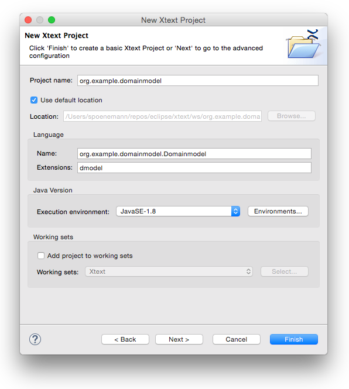
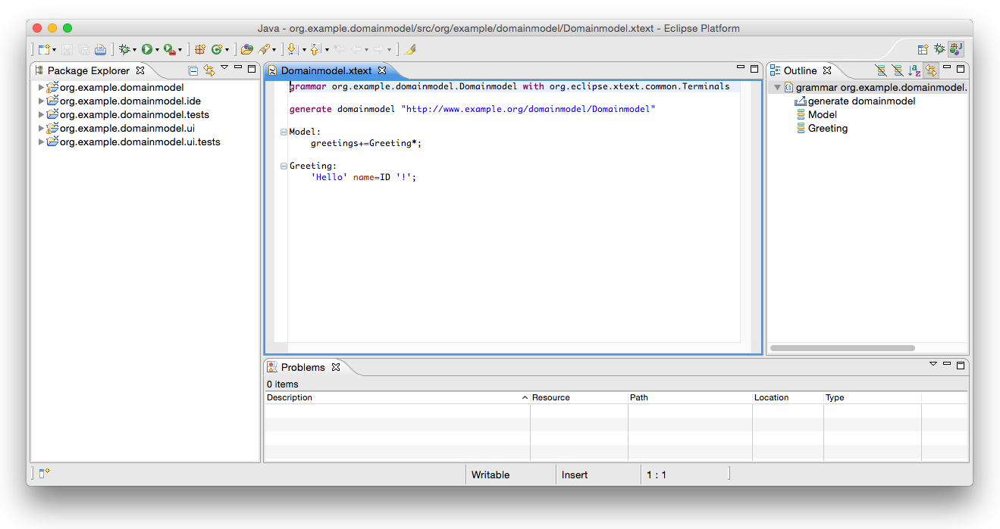
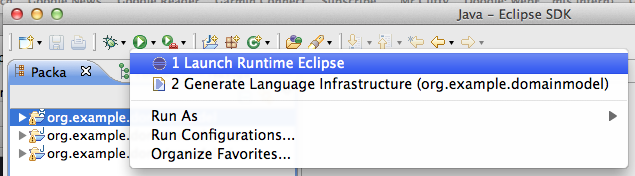

In this tutorial we will basically implement the domain model language again, but this time we will make use of the special JVM support shipped with Xtext 2.x. This kind of language really is a sweet spot for DSLs, so feel free to use this as a blueprint and add your project specific features later on.
The revised domain model language supports expressions and cross links to Java types. It is directly translated to Java source code. The syntax should look very familiar. Here is an example:
import java.util.List
package my.model {
entity Person {
name: String
firstName: String
friends: List<Person>
address : Address
op getFullName() : String {
return firstName + " " + name;
}
op getFriendsSortedByFullName() : List<Person> {
return friends.sortBy[ f | f.fullName ]
}
}
entity Address {
street: String
zip: String
city: String
}
}
As you can see, it supports all kinds of advanced features such as Java generics and full expressions even including lambda expressions. Don’t panic you will not have to implement these concepts on your own but will reuse a lot of helpful infrastructure to build the language.
We will now walk through the five! little steps needed to get this language fully working including its compiler.
After you have installed Xtext on your machine, start Eclipse and set up a fresh workspace.
In order to get started we first need to create some Eclipse projects. Use the Eclipse wizard to do so:
File → New → Project… → Xtext → Xtext Project
Choose a meaningful project name, language name and file extension, e.g.
| Main project name: | org.example.domainmodel |
| Language name: | org.example.domainmodel.Domainmodel |
| DSL-File extension: | dmodel |
Click on Finish to create the projects.

After you have successfully finished the wizard, you will find three new projects in your workspace.
| org.example.domainmodel | Contains the grammar definition and all runtime components (parser, lexer, linker, validation, etc.) |
| org.example.domainmodel.tests | Unit tests go here. |
| org.example.domainmodel.ui | The Eclipse editor and all the other workbench related functionality. |

The wizard will automatically open the grammar file Domainmodel.xtext in the editor. As you can see it already contains a simple Hello World grammar:
grammar org.example.domainmodel.Domainmodel with
org.eclipse.xtext.common.Terminals
generate domainmodel "http://www.example.org/domainmodel/Domainmodel"
Model:
greetings+=Greeting*;
Greeting:
'Hello' name=ID '!';
Please replace that grammar definition with the one for our language:
grammar org.example.domainmodel.Domainmodel with
org.eclipse.xtext.xbase.Xbase
generate domainmodel "http://www.example.org/domainmodel/Domainmodel"
Domainmodel:
importSection=XImportSection?
elements+=AbstractElement*;
AbstractElement:
PackageDeclaration | Entity;
PackageDeclaration:
'package' name=QualifiedName '{'
elements+=AbstractElement*
'}';
Entity:
'entity' name=ValidID
('extends' superType=JvmTypeReference)? '{'
features+=Feature*
'}';
Feature:
Property | Operation;
Property:
name=ValidID ':' type=JvmTypeReference;
Operation:
'op' name=ValidID
'('(params+=FullJvmFormalParameter
(',' params+=FullJvmFormalParameter)*)?')'
':' type=JvmTypeReference
body=XBlockExpression;
Let’s have a look at what the different grammar constructs mean:
grammar org.example.domainmodel.Domainmodel with
org.eclipse.xtext.xbase.Xbase
The first thing to note is that instead of inheriting from the usual org.eclipse.xtext.common.Terminals grammar, we make use of org.eclipse.xtext.xbase.Xbase. Xbase allows us to easily reuse and embed modern, statically typed expressions as well as Java type signatures in our language.
Domainmodel:
importSection=XImportSection?
elements+=AbstractElement*;
The first rule in a grammar is always used as the entry or start rule. It says that a Domainmodel contains an optional import section and an arbitrary number (*) of AbstractElements which will be added (+=) to a feature called elements. The concept of XImportSection is part of org.eclipse.xtext.xbase.Xbase and comes with tool support and syntax like you know it from Java.
AbstractElement:
PackageDeclaration | Entity;
The rule AbstractElement delegates to either the rule PackageDeclaration or the rule Entity.
PackageDeclaration:
'package' name=QualifiedName '{'
elements+=AbstractElement*
'}';
A PackageDeclaration is used to declare a name space which can again contain any number of AbstractElements. Xtext has built-in support for qualified names and scoping based on the hierarchy of the produced model. The default implementation will add the package names as the prefix to contained entities and nested packages. The qualified name of an Entity ‘Baz’ which is contained in a PackageDeclaration ‘foo.bar’ will be ‘foo.bar.Baz’. In case you do not like the default behavior you will need to use a different implementation of IQualifiedNameProvider.
Entity:
'entity' name=ValidID
('extends' superType=JvmTypeReference)? '{'
features+=Feature*
'}';
The rule Entity starts with the definition of a keyword followed by a name. The extends clause which is parenthesized and optional (note the trailing ?) makes use of the rule JvmTypeReference which is defined in a super grammar. JvmTypeReference defines the syntax for full Java-like type names. That is everything from simple names, over fully qualified names to fully-fledged generics, including wildcards, lower bounds and upper bounds. Finally between curly braces there can be any number of Features, which leads us to the next rule.
Feature:
Property | Operation;
The rule Feature delegates to either a Property or an Operation.
Property:
name=ValidID ':' type=JvmTypeReference;
A Property has a name and makes again use of the inherited rule JvmTypeReference.
Operation:
'op' name=ValidID
'('(params+=FullJvmFormalParameter
(',' params+=FullJvmFormalParameter)*)?')'
':' type=JvmTypeReference
body=XBlockExpression;
Operations also have a signature as expected. Note that also for formal parameters we can reuse a rule from the super grammar.
The Operation’s body, that is the actual implementation is defined by the rule XBlockExpression which is one of the most often used entry rules from Xbase. A block consist of any number of expressions between curly braces such as:
{
return "Hello World" + "!"
}
Now that we have the grammar in place and defined we need to execute the code generator that will derive the various language components. To do so right click in the grammar editor. From the opened context menu, choose
Run As → Generate Xtext Artifacts.
This will trigger the Xtext language generator. It generates the parser and serializer and some additional infrastructure code. You will see its logging messages in the Console View.
The syntax alone is not enough to make the language work. We need to map the domain specific concepts to some other language in order to tell Xtext how it is executed. Usually you define a code generator or an interpreter for that matter, but languages using Xbase can omit this step and make use of the IJvmModelInferrer.
The idea is that you translate your language concepts to any number of Java types (JvmDeclaredType). Such a type can be a Java class, Java interface, Java annotation type or a Java enum and may contain any valid members. In the end you as a language developer are responsible to create a correct model according to the Java language.
By mapping your language concepts to Java elements, you implicitly tell Xtext in what kind of scopes the various expressions live and what return types are expected from them. Xtext 2.x also comes with a code generator which can translate that Java model into readable Java code, including the expressions.
If you have already triggered the ‘Generate Xtext Artifacts’ action, you should find a stub called org/example/domainmodel/jvmmodel/DomainmodelJvmModelInferrer.xtend in the src folder. Please replace its contents with the following :
package org.example.domainmodel.jvmmodel
import com.google.inject.Inject
import org.example.domainmodel.domainmodel.Entity
import org.example.domainmodel.domainmodel.Operation
import org.example.domainmodel.domainmodel.Property
import org.eclipse.xtext.naming.IQualifiedNameProvider
import org.eclipse.xtext.xbase.jvmmodel.AbstractModelInferrer
import org.eclipse.xtext.xbase.jvmmodel.IJvmDeclaredTypeAcceptor
import org.eclipse.xtext.xbase.jvmmodel.JvmTypesBuilder
class DomainmodelJvmModelInferrer extends AbstractModelInferrer {
/**
* a builder API to programmatically create Jvm elements
* in readable way.
*/
@Inject extension JvmTypesBuilder
@Inject extension IQualifiedNameProvider
def dispatch void infer(Entity element,
IJvmDeclaredTypeAcceptor acceptor,
boolean isPrelinkingPhase) {
acceptor.accept(element.toClass( element.fullyQualifiedName )) [
documentation = element.documentation
if (element.superType != null)
superTypes += element.superType.cloneWithProxies
for (feature : element.features) {
switch feature {
Property : {
members += feature.toField(feature.name, feature.type)
members += feature.toGetter(feature.name, feature.type)
members += feature.toSetter(feature.name, feature.type)
}
Operation : {
members += feature.toMethod(feature.name, feature.type) [
documentation = feature.documentation
for (p : feature.params) {
parameters += p.toParameter(p.name, p.parameterType)
}
body = feature.body
]
}
}
}
]
}
}
Let’s go through the code to get an idea of what is going on. (Please also refer to the JavaDoc of the used API for details, especially the JvmTypesBuilder).
def dispatch void infer(Entity element,
IAcceptor<JvmDeclaredType> acceptor,
boolean isPrelinkingPhase) {
Using the dispatch keyword makes sure that the method is called for instances of type Entity only. Have a look at the Xtend documentation on polymorphic dispatch to understand Xtend’s dispatch functions. Extending AbstractModelInferrer makes sure we don’t have to walk the syntax model on our own.
acceptor.accept(element.toClass(element.fullyQualifiedName)) [
...
]
Every JvmDeclaredType you create in the model inference needs to be passed to the acceptor in order to get recognized. The extension method toClass comes from JvmTypesBuilder. That class provides a lot of convenient extension methods, which help making the code extremely readable and concise. It is important to understand that the creation and assignment of a qualified name, is done in an early phase where the compiler collects all global symbols. You cannot resolve type references at this point.
documentation = element.documentation
Here we assign some JavaDoc to the newly created element. The assignment is translated to an invocation of the method JvmTypesBuilder.setDocumentation(JvmIdentifiableElement, String), and element.documentation is in fact calling the extension method JvmTypesBuilder.getDocumentation(EObject). Xtend’s extension methods are explained in detail on the Xtend website.
if (element.superType != null)
superTypes += entity.superType.cloneWithProxies
Set the superType on the inferred element. Note that we have to clone the type reference from the element.superType. If we did not do that, the type reference would be automatically removed from the element, as superType is an EMF containment reference.
for (feature : element.features) {
switch feature {
Property : {
// ...
}
Operation : {
// ...
}
}
}
When iterating over a list of heterogeneous types, the switch expression with its type guards comes in handy. If feature is of type Property the first block is executed. If it is an Operation the second block is executed. Note that the variable feature will be implicitly casted to the respective type within the blocks.
Property : {
members += feature.toField(feature.name, feature.type)
members += feature.toSetter(feature.name, feature.type)
members += feature.toGetter(feature.name, feature.type)
}
For each Property we create a field as well as a corresponding getter and setter.
Operation : {
members += feature.toMethod(feature.name, feature.type) [
documentation = feature.documentation
for (p : feature.params) {
parameters += p.toParameter(p.name, p.parameterType)
}
body = feature.body
]
}
Operations are being mapped to a corresponding Java method. The documentation is translated and the parameters are added within the initializer. The line body = feature.body registers the Operation’s expression as the body of the newly created Java method. This defines the scope of the expression. The frameworks deduces the visible fields and parameters as well as the expected return type from that information.
We are now able to test the IDE integration, by spawning a new Eclipse using our plug-ins. To do so just use the launch shortcut called “Launch Runtime Eclipse”, clicking on the green play button in the tool bar.

In the new workbench, create a Java project (File → New → Project… → Java Project). Xbase relies on a small runtime library on the class path. To add this, right-click on the project and go to Java Build Path → Libraries → Add Library and choose Xtend Library. Then create a new file with the file extension you chose in the beginning (*.dmodel) in the source folder of the Java project. This will open the generated entity editor. Try it and discover the rich functionality it provides. You should also have a look at the preferences of your language to find out what can be individually configured to your users needs.
Have fun!